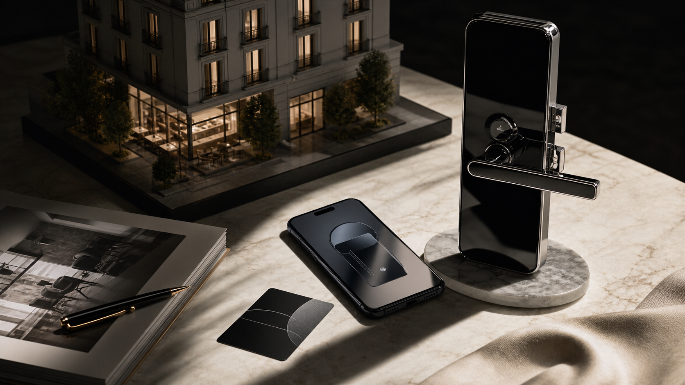
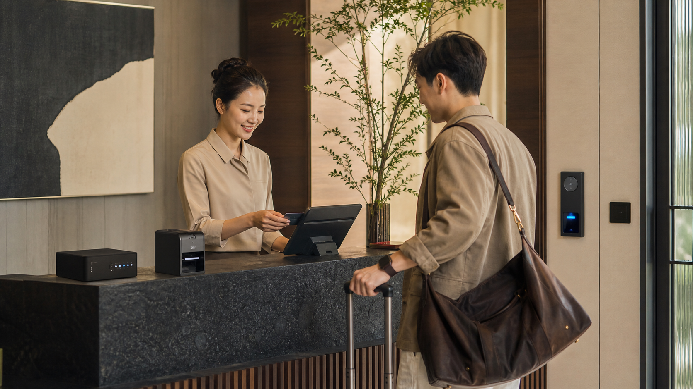
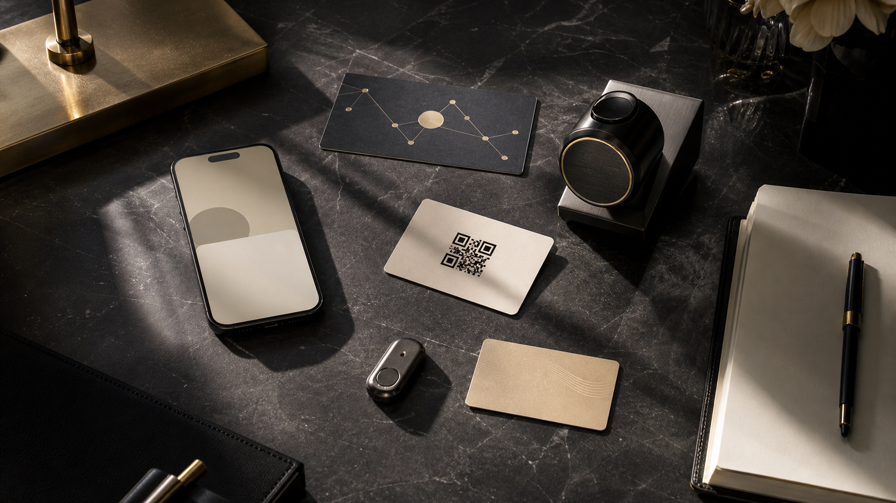

Mobile key กลายเป็นคำสำคัญที่ถูกพูดถึงบ่อยใน smart hospitality. แขกไม่อยากต่อคิวรับบัตร โรงแรมไม่อยากจัดการ keycard ที่หายหรือ demagnetized และแบรนด์ก็อยากให้ journey ดูทันสมัย: pre check-in, mobile access และ permission ที่หมดอายุอัตโนมัติหลัง check-out.
แต่ในงานจริงของโรงแรม “mobile key” ไม่ได้หมายถึง feature เดียว. มันอาจรวม NFC credential, QR code, temporary passcode, self-issued keycard หรือหลายทางเลือกที่ทำงานร่วมกัน เพื่อให้แขกแต่ละกลุ่มเข้าได้ด้วยวิธีที่ถนัด.
คำถามตอนซื้อจึงใหญ่กว่า brand recognition. โรงแรมต้องถามว่า lock เดิมอัปเกรดได้ไหม PMS เชื่อมได้ไหม ประตูยังเปิดได้ไหมเมื่อ network ไม่เสถียร แขกเข้าใจ flow หรือเปล่า และพนักงานแก้ exception ได้อย่างไร.
ซื้อ lock brand หรือซื้อ access workflow?

แบรนด์ global access อย่าง Vingcard / ASSA ABLOY, dormakaba และ SALTO แข็งแรงในด้าน hardware ระดับโรงแรม portfolio ของ lock ประสบการณ์ deployment และ enterprise access management. HID มักถูกพูดถึงในบริบท identity credential และ secure mobile access. สำหรับ hotel group ขนาดใหญ่ ecosystem เหล่านี้เข้ากับ procurement, maintenance และ brand standard ได้ดี.
แต่โรงแรมขนาดเล็กและกลางมีปัญหาต่างออกไป. พวกเขาอาจไม่ต้องการเปลี่ยน lock ทุกบานในครั้งเดียว ไม่มี IT team ขนาดใหญ่ และต้องการเชื่อม self check-in, QR access, mobile credential, staff permission และ housekeeping workflow ก่อนจะลงทุน hardware หนัก.
คำถามแรกจึงไม่ใช่ “lock ไหนดังที่สุด” แต่คือ “access workflow ไหนเชื่อม PMS, guest device และประตูได้อย่างน่าเชื่อถือที่สุด”.
Enterprise systems เหมาะกับโรงแรมมาตรฐานขนาดใหญ่
ระบบ lock ระดับ enterprise มีคุณค่าเพราะ mature, support ดี และออกแบบมาเพื่อจำนวนห้องมาก. เหมาะกับโรงแรมใหม่ renovation ทั้งอาคาร branded property resort และสถานที่ที่ต้องวางแผน room door, elevator, public area และ back-of-house permission ร่วมกัน.
ข้อแลกเปลี่ยนคือความหนักของโครงการ. Hardware replacement, installation, license fees, system integration และ long-term maintenance เข้ามาพร้อมกัน. สำหรับ property ที่มีไม่กี่สิบห้อง หรือ boutique hotel ที่ยังทดลอง demand ของ smart check-in นี่อาจเป็น first step ที่หนักเกินไป.
Lightweight edge workflows ช่วยให้โรงแรมเล็กเริ่มได้

Cellbedell เหมาะกับคำถามว่า จะทำให้ workflow หน้างานเริ่มทำงานก่อนอย่างไร. Edge devices, card issuers และ access equipment สามารถเป็น local operational nodes. เมื่อ PMS ส่ง reservation, room, arrival time และ guest status ผ่าน API อุปกรณ์หน้างานสามารถออกบัตร สร้าง credential หรือทำ door decision locally.
เป้าหมายไม่ใช่บอกว่า lightweight hardware แทน enterprise lock system ได้ทุกกรณี แต่คือลด deployment barrier แรก. โรงแรมสามารถเชื่อม self check-in, card issuing, QR code, mobile access และ permission management ให้เป็น workflow ที่ใช้งานได้ ก่อน redesign ทั้ง property.
Edge computing สำคัญเพราะ access control ไม่ควรพึ่ง cloud ทุก decision. ถ้า network ไม่เสถียร แขกไม่ควรถูกทิ้งไว้นอกห้อง. Local edge devices สามารถตัดสินใจที่จำเป็นต่อได้ช่วงสั้นๆ ขณะที่ cloud ดูแล synchronization, records และ management.
7 เรื่องที่ควรเช็กก่อนเลือก mobile key

- PMS integration: ระบบรับ reservation, room, arrival และ departure status ผ่าน API ได้ไหม?
- Lock compatibility: lock เดิมอัปเกรดได้ หรือจำเป็นต้องเปลี่ยน?
- Guest entry method: แขกใช้ mobile key, QR code, NFC, passcode หรือ physical card?
- Offline backup: แขกที่ได้รับอนุญาตเข้าห้องได้ไหมเมื่อ network ขัดข้อง?
- Permission expiry: สิทธิ์หมดอายุอัตโนมัติหลัง check-out, room change หรือ cancellation หรือไม่?
- Security maintenance: firmware, credential rules, revocation และ event logs ถูกตรวจสม่ำเสมอไหม?
- On-site exceptions: ถ้าโทรศัพท์แบตหมด แขกต่างชาติไม่เข้าใจ flow หรือครอบครัวต้องใช้หลาย credential จะทำอย่างไร?
ถ้าข้ามคำถามเหล่านี้ mobile key จะกลายเป็น feature ที่ดูสวยแต่พังง่ายในจังหวะที่แขกต้องใช้. ถ้า workflow ถูกออกแบบดี phone access เป็นเพียงผลลัพธ์ที่มองเห็น. คุณค่าลึกกว่าคือ guest, front desk, housekeeping และ access system เชื่อมด้วย operational data เส้นเดียวกัน.
ไม่ใช่ทุก property ต้องใช้คำตอบเดียวกัน
โรงแรมใหญ่เลือก ecosystem lock แบบ enterprise ได้ เพราะต้องการ maintenance มาตรฐานและการจัดการห้องจำนวนมาก. โรงแรมเล็ก inn และ serviced apartment อาจเริ่มจาก self check-in, PMS API integration, QR access, virtual credential และ access upgrade บางส่วนก่อน.
Smart check-in ที่ mature ไม่ใช่การบังคับแขกทุกคนใช้มือถือ หรือเอา front desk ออกไปทั้งหมด. มันคือ flexible access design: แขกที่รีบเข้าห้องได้เร็ว แขกที่ต้องการความช่วยเหลือยังได้รับ support และระบบจัด identity, time และ permission อยู่เบื้องหลังอย่างเงียบๆ.